Visual Business UI5: Sample should show Drag and Drop functionality for Spots and Links.
The aim:
To test Drag and Drop functionality for Spots and Links.
To test:
Note: This cannot be tested on touch devices
Check the following:
There are no visual changes - You just need to observe the textarea
- Spot 0 can be dropped on Spot 1, Spot 2 and on the Link Frankfurt-Kassel.
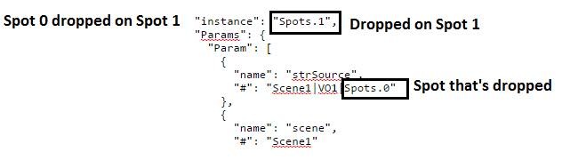
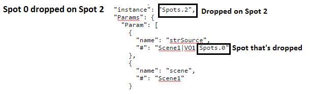
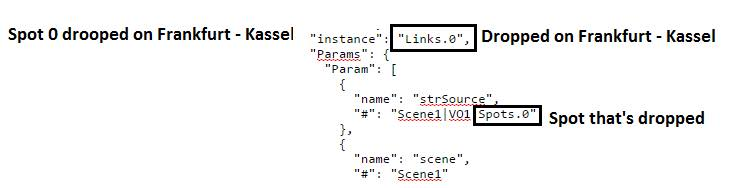
- Spot 1 can be dropped on Spot 0 and on Spot 2 .
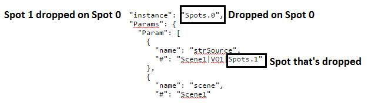
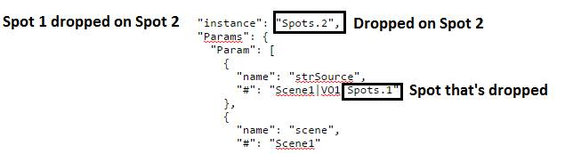
- Spot 2 can be dropped on Spot 0, Spot 1 and on itself.
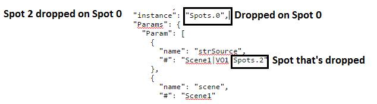
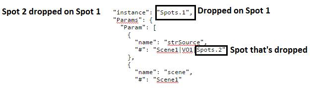
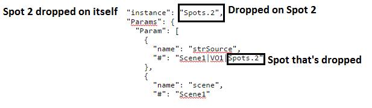
- The Link Frankfurt-Kassel can be dropped on Spot 0, Spot 2 and the Link Berlin-Hamburg.
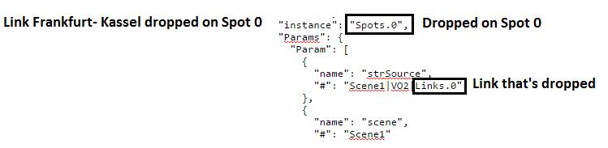
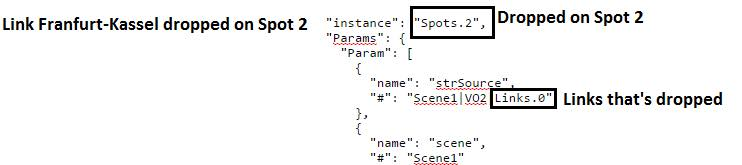
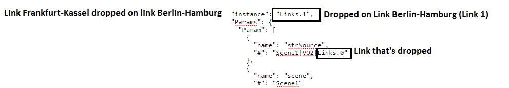
- The Link Berlin-Hamburg can be dropped on Spot 0, Spot 2 and the Link Frankfurt-Kassel.
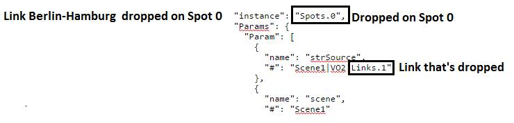
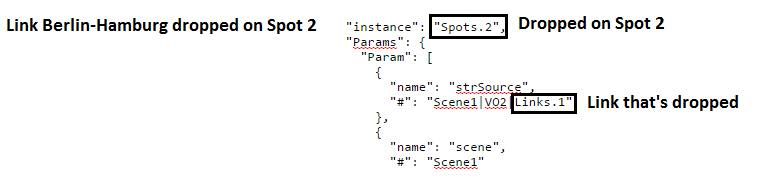
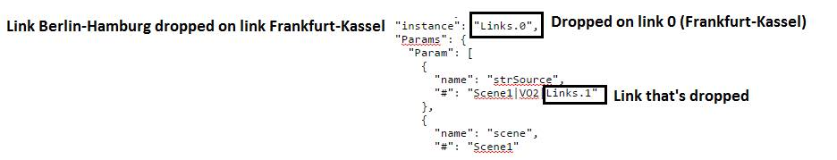
- All Spots and Links can be dropped on External Area. this can be found below the map control
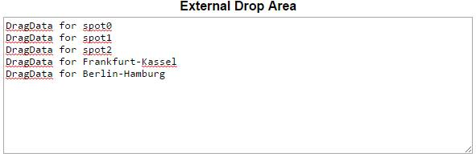
| Event Output |
|
|
| External Drop Area |
|
|